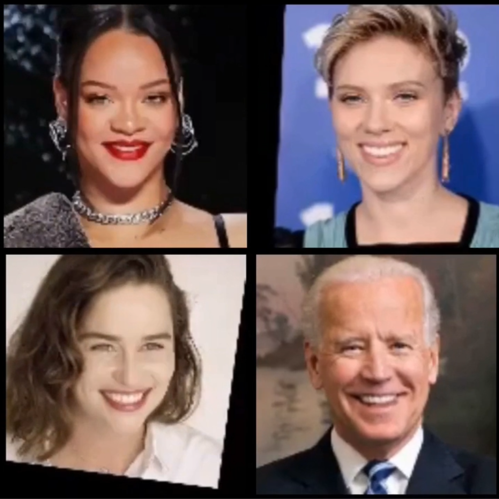
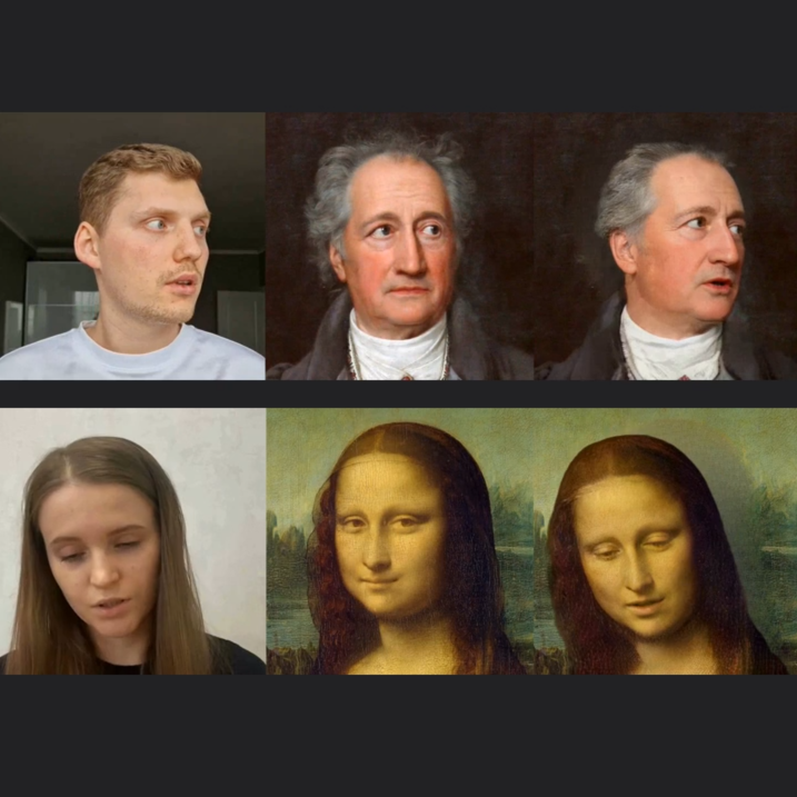
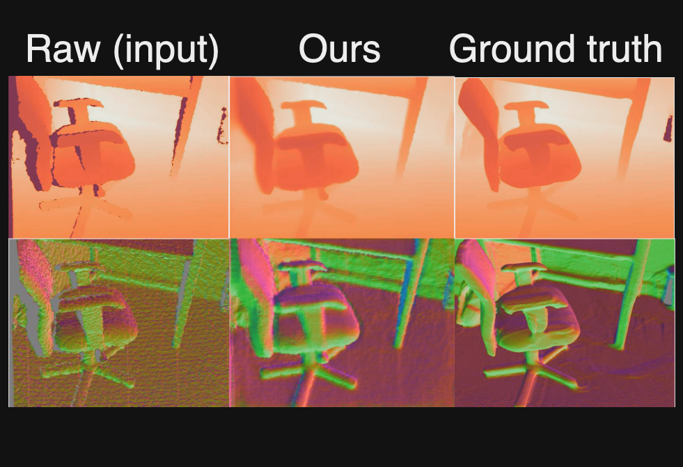
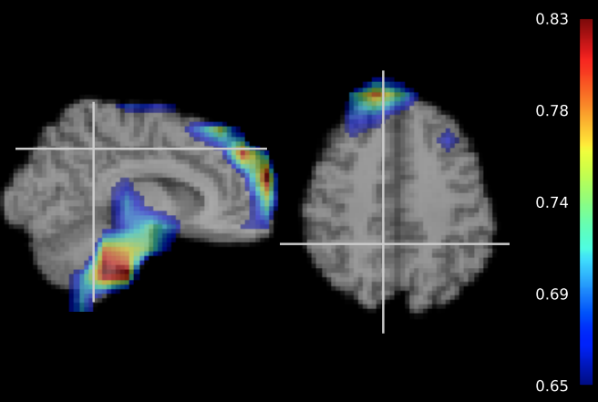

|
Nikita Drobyshev ML Research Engineer at Meta. Working on human avatars and generative AI. MS @ Skoltech. Ex-Samsung.. |

|
ResearchI'm interested in computer vision, deep learning, generative AI, and image processing. Most of my research is about human face/head generation and manipu. Representative papers are highlighted. |

|
Mip-NeRF 360: Unbounded Anti-Aliased Neural Radiance Fields
Jonathan T. Barron, Ben Mildenhall, Dor Verbin, Pratul Srinivasan, Peter Hedman CVPR, 2022 (Oral Presentation) project page / arXiv / video mip-NeRF can be extended to produce realistic results on unbounded scenes. |
|

|
Laughing Matters: Introducing Laughing-Face Generation using Diffusion Models
Antoni Bigata Casademunt, Rodrigo Mira, Nikita Drobyshev, Konstantinos Vougioukas, Peter Zhizhin, Jean-François Thibert, Stavros Petridis, Maja Pantic, BMVC, 2023 project page / video / arXiv Model that creates realistic laughter animations from a still image and laughter audio, using advanced diffusion models. |
|

|
MegaPortraits: One-shot Megapixel Neural Head Avatars
Nikita Drobyshev, Jenya Chelishev, Taras Khakhulin, Aleksei Ivakhnenko, Viktor Lempitsky, Egor Zakharov ACMM, 2022 project page / arXiv / video In this work, we advance the neural head avatar technology to the megapixel resolution while focusing on the particularly challenging task of cross-driving synthesis, i.e., when the appearance of the driving image is substantially different from the animated source image. |
|

|
Unpaired Depth Super-Resolution in the Wild
Aleksandr Safin*, Nikita Drobyshev*, Maxim Kan*, Oleg Voynov, Alexey Artemov, Alexander Filippov, Denis Zorin, Evgeny Burnaev, arXiv, 2021 arXiv We propose an unpaired learning method for depth super-resolution, which is based on a learnable degradation model, enhancement component and surface normal estimates as features to produce more accurate depth maps. |
|

|
Interpretation of 3D CNNs for Brain MRI Data Classification
Maxim Kan, Ruslan Aliev, Anna Rudenko, Nikita Drobyshev, Nikita Petrashen, Ekaterina Kondrateva, Maxim Sharaev, Alexander Bernstein, Evgeny Burnaev, AIST, 2020 arXiv We extend the previous findings in gender differences from diffusion-tensor imaging on T1 brain MRI scans. We provide the voxel-wise 3D CNN interpretation comparing the results of three interpretation methods: Meaningful Perturbations, Grad CAM and Guided Backpropagation, and contribute with the open-source library. |
|
Feel free to steal this website's source code. Do not scrape the HTML from this page itself, as it includes analytics tags that you do not want on your own website — use the github code instead. Also, consider using Leonid Keselman's Jekyll fork of this page. |